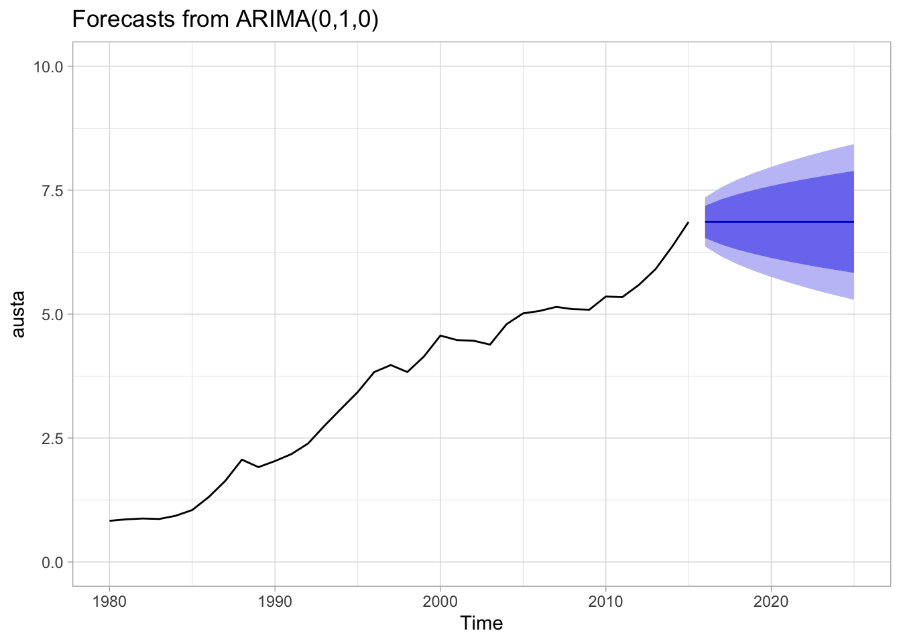

library(tidyverse)
library(fpp2)
library(corrplot)
library(mlbench)
library(naniar)
library(readxl)
library(seasonal)Homework 1
CUNY DATA 624 - 2023 Summer I
Exercise Key
KJ - Applied Predictive Modeling (Kuhn, Johnson)
HA - Forecasting: Principles and Practice, 2nd Ed. (Hyndman, Athanasopoulos)
Required R Libraries
HA Exercise 2.1
Use the help function to explore what the series gold, woolyrnq and gas represent.
help(gold)
help(woolyrnq)
help(gas)The series
goldis a time-series dataset of daily morning gold prices in US dollars, from Jan 1, 1985 through Mar 31, 1989.The series
woolyrngis a time-series dataset of quarterly production of woolen yarn in Australia, in metric tons (tonnes), from Mar 1965 through Sep 1994.The series
gasis a time-series dataset of monthly gas production in Australia, units unknown, from 1956 through 1995.
- Use
autoplot()to plot each of these in separate plots.
autoplot(gold) +
ggtitle("Plot for Gold Time Series") +
xlab("Day") + ylab("Price $")
#
autoplot(woolyrnq) +
ggtitle("Plot for Wool Time Series") +
xlab("Year") + ylab("Weight in tonnes")
#
autoplot(gas) +
ggtitle("Plot for Gas Time Series") +
xlab("Year") + ylab("Amount Produced")What is the frequency of each series? Hint: apply the
frequency()- The frequency of the
goldseries is 1 (daily) - The frequency of the
woolyrnqseries is 4 (quarterly) - The frequency of the
gasseries is 12 (yearly)
- The frequency of the
frequency(gold)
frequency(woolyrnq)
frequency(gas)Use
which.max()to spot the outlier in thegoldseries. Which observation was it?The outlier value in the
goldseries is observation 770 with a value of 593.7.
which.max(gold)
gold[which.max(gold)]HA Exercise 2.3
Download some monthly Australian retail data from the book website. These represent retail sales in various categories for different Australian states, and are stored in a MS-Excel file.
retaildata <- readxl::read_excel("data/retail.xlsx", skip=1)- Select one of the time series … explore your chosen retail time series using the following functions:
autoplot(),ggseasonplot(),ggsubseriesplot(),gglagplot(),ggAcf()
ts_ausretail <- ts(retaildata[,"A3349338X"], frequency=12, start=c(1982,4))
#
autoplot(ts_ausretail) +
ggtitle('Monthly Product Sales: A3349338X') +
xlab('Year') + ylab('Sales')
#
ggseasonplot(ts_ausretail) +
ggtitle('Seasonal Plot: A3349338X') +
xlab('Month') + ylab('Sales')
#
ggsubseriesplot(ts_ausretail) +
ggtitle('Subseries Plot: A3349338X') +
xlab('Month') + ylab('Sales')
#
gglagplot(ts_ausretail) +
ggtitle('Lag Plot: A3349338X')
#
ggAcf(ts_ausretail) +
ggtitle('ACFPlot: A3349338X') +
xlab('Month') + ylab('Sales')Can you spot any seasonality, cyclicity and trend? What do you learn about the series?
This dataset does not seem to have any seasonality. There could be an argument that December saw an increase compared to the other months - however, this may not be statistically relevant. One clear thing is that there is a cyclical nature to the data, as seen with the subseries plot where there is an increase as the month continues.
The plots also show that as a general trend, the total gradually increaes annually with some exceptions around 2001 and 2011.
HA Exercise 6.2
The plastics data set consists of the monthly sales (in thousands) of product A for a plastics manufacturer for five years.
Plot the time series of sales of product A. Can you identify seasonal fluctuations and/or a trend-cycle?
We can observe a rising trend-cycle with a seasonal pattern of sales increases beginning in April/May, peaking in August/September and declining for the winter months with the lowest sales month in February.
autoplot(plastics) +
ggtitle("Plastics: Sales per Month") +
xlab("Year") + ylab("Sales (K)")
#
ggseasonplot(plastics) +
ggtitle("Plastics: Classical Multiplicative Decomp") +
xlab("Year") + ylab("Sales (K)")- Use a classical multiplicative decomposition to calculate the trend-cycle and seasonal indices.
plastics_d <- plastics %>%
decompose(type="multiplicative")
#
autoplot(plastics_d) +
ggtitle("Plastics: Classical Multiplicative Decomp") +
xlab("Year")Do the results support the graphical interpretation from part a?
The results largely support the graphical interpretation of a rising trend-cycle with a clear pattern of seasonality. However one issue we notice is a fair amount of remainder / residual that seems to also follow that seasonal pattern, suggesting that the model is not fully capturing all of the seasonal effects.
Compute and plot the seasonally adjusted data.
See below.
Change one observation to be an outlier (e.g., add 500 to one observation), and recompute the seasonally adjusted data. What is the effect of the outlier?
The presence of a large outlier early in the time series carried forward into future modeled seasonal periods in the decomposition, even though the outlier only occurred once.
plastics_seas <-(plastics / plastics_d$seasonal)
#
autoplot(plastics_seas, ylim=c(800,1500)) +
ggtitle("Plastics: Seasonally Adjusted") +
xlab("Year") + ylab("Sales (K)")
#
plastics_out_10 <- plastics
plastics_out_10[10] <- plastics_out_10[10]+500
plastics_out_10_d <- plastics_out_10 %>%
decompose(type="multiplicative")
plastics_out_10_seas <- (plastics_out_10/plastics_out_10_d$seasonal)
autoplot(plastics_out_10_seas, ylim=c(800,1500)) +
ggtitle("Plastics + Early Outlier: Seasonally Adjusted") +
xlab("Year") + ylab("Sales (K)")
#
# decomp plots
autoplot(plastics_d) +
ggtitle("Plastics: Classical Multiplicative Decomp") +
xlab("Year")
#
autoplot(plastics_out_10_d) +
ggtitle("Plastics + Early Outlier: Classical Multiplicative Decomp") + xlab("Year")
Does it make any difference if the outlier is near the end rather than in the middle of the time series?
It seems the positioning of the outlier can have a significant impact on how the model interprets seasonality - the earlier an outlier is present in the time series, the longer it will impact the model. As the outlier moves to later positions in the time series, it has less of an effect on future periods.
# outlier at index 30
plastics_out_30 <- plastics
plastics_out_30[30] <- plastics_out_30[30]+500
plastics_out_30_d <- plastics_out_30 %>%
decompose(type="multiplicative")
plastics_out_30_seas <- (plastics_out_30/plastics_out_30_d$seasonal)
autoplot(plastics_out_30_seas, ylim=c(800,2000)) +
ggtitle("Plastics + Middle Outlier: Seasonally Adjusted") +
xlab("Year")
# outlier at index 50
plastics_out_50 <- plastics
plastics_out_50[50] <- plastics_out_50[50]+500
plastics_out_50_d <- plastics_out_50 %>%
decompose(type="multiplicative")
plastics_out_50_seas <- (plastics_out_50/plastics_out_50_d$seasonal)
autoplot(plastics_out_50_seas, ylim=c(800,2000)) +
ggtitle("Plastics + Late Outlier: Seasonally Adjusted") +
xlab("Year")
# decomp plots
autoplot(plastics_out_30_d) +
ggtitle("Plastics + Middle Outlier: Classical Multiplicative Decomp") +
xlab("Year")
autoplot(plastics_out_50_d) +
ggtitle("Plastics + Late Outlier: Classical Multiplicative Decomp") +
xlab("Year")
KJ Exercise 3.1
The UC Irvine Machine Learning Repository contains a data set related to glass identification. The data consist of 214 glass samples labeled as one of seven class categories. There are nine predictors, including the refractive index and percentages of eight elements: Na, Mg, Al, Si, K, Ca, Ba, and Fe.
Using visualizations, explore the predictor variables to understand their distributions as well as the relationships between predictors.
Do there appear to be any outliers in the data? Are any predictors skewed?
Are there any relevant transformations of one or more predictors that might improve the classification model?
It can be seen that:
Alis slightly right skewedBais right skewed and mostly centered around 0Cais right skewedFeis right skewed and mostly centered around 0Kis right skewed * Mg is left skewed and bimodalNais almost normal with a slight right tailRIis right skewed * Si is left skewedTypeis mostly centered around Types 1,2, and 7
There also seems to be a strong positive correlation between
RIandCa. There are also notable negative correlations betweenRIandSi,AlandMg,CaandMg, andBaandMg. There is also notable positive correlations between Ba and Al.There seems to be outliers in
Ba,K,RI,Ca,Fe, and possiblyNa. There are some predictors that are skewed as mentioned below:Since
Be,Fe, andKhave a strong right skewness with a concentrations of points with low values, they may benefit from a log transformation.Mgmay also be log transformed since it is left skewed. The table below shows the optimal lambdas.RIcan be inverse squared whileSican be squared.Alcan be square rooted. It would also be interesting to see how the model performs withoutCaas it has correlations with other variables.
library(mlbench)
library(corrplot)
data(Glass)
Glass %>%
keep(is.numeric) %>%
gather() %>%
ggplot(aes(value)) +
geom_histogram(bins = 15) +
facet_wrap(~key, scales = 'free') +
ggtitle("Histograms of Numerical Predictors")
#
Glass %>%
keep(is.numeric) %>%
gather() %>%
ggplot(aes(value)) +
geom_boxplot() +
facet_wrap(~key, scales = 'free') +
ggtitle("Boxplots of Numerical Predictors")
#
Glass %>%
keep(is.numeric) %>%
cor() %>%
corrplot()
#
Glass %>%
ggplot() +
geom_bar(aes(x = Type)) +
ggtitle("Distribution of Types of Glass")
KJ Exercise 3.2
The UC Irvine Machine Learning Repository contains a data set related to soybeans. Data were collected to predict disease in 683 soybeans. The 35 predictors are mostly categorical and include information on the environmen- tal conditions (e.g., temperature, precipitation) and plant conditions (e.g., left spots, mold growth). The outcome labels consist of 19 distinct classes.
Investigate the frequency distributions for the categorical predictors. Are any of the distributions degenerate in the ways discussed earlier in this chapter?
Roughly 18 % of the data are missing. Are there particular predictors that are more likely to be missing? Is the pattern of missing data related to the classes?
Develop a strategy for handling missing data, either by eliminating predictors or imputation.
By examining bar plots of the frequencies, we can see that all variables have more than one possible outcome, so they are not ‘degenerate distributions’ in the strictest sense. However, several only have two possible outcomes with a huge imbalance (such as
shrivelingandleaf.maif), so these might be considered to fall into this category.Using the
naniarpackage to visualize missing data, we can see that certain predictors (e.g.sever,seed.tmt,lodgingandhail) are missing data for over 15% of the observations. However can also see this missingness is restricted to just five soybean Classes.
library(naniar)
library(mlbench)
data(Soybean)
df_soybean <- Soybean
# factors: ordered to regular; drop NAs and 'Class'
df_soybean_freq <- df_soybean %>%
dplyr::select(!Class) %>%
drop_na() %>%
mutate_if(is.ordered, ~ factor(., ordered = FALSE))
# matrixed bar plots
df_soybean_freq %>%
pivot_longer(everything(), names_to = c('variables'), values_to = c('values')) %>%
ggplot() + geom_bar(aes(x=values)) +
facet_wrap(vars(variables), scales="free")
# missing data by predictor
gg_miss_var(df_soybean, show_pct=TRUE)
# missing data by predictor and class
gg_miss_var(df_soybean, facet = Class, show_pct=TRUE)
On closer examination, we can see that several classes (`2-4-d-injury`, `cyst-nematode`, `herbicide-injury`) are missing 100% of data for most of the predictor variables. Altogether these only represent 38 observations or about 6% of the total. Unless there is a compelling reason to keep these three classes, we might consider dropping them from the model, and using a robust imputation method (such as MICE or KNN) on the two other classes for which we have partial data.
df_soybean_missing <- df_soybean %>%
filter(Class %in% c('2-4-d-injury','cyst-nematode','diaporthe-pod-&-stem-blight',
'herbicide-injury','phytophthora-rot'))
df_soybean_missing %>%
gg_miss_var(facet = Class, show_pct=TRUE)HA Exercise 7.1
Consider the pigs series — the number of pigs slaughtered in Victoria each month.
- Use the
ses()function in R to find the optimal values of \(\alpha\) and \(\ell_0\), and generate forecasts for the next four months.
data(pigs)
pigs_ses <- ses(pigs, h=4)
summary(pigs_ses)
Forecast method: Simple exponential smoothing
Model Information:
Simple exponential smoothing
Call:
ses(y = pigs, h = 4)
Smoothing parameters:
alpha = 0.2971
Initial states:
l = 77260.0561
sigma: 10308.58
AIC AICc BIC
4462.955 4463.086 4472.665
Error measures:
ME RMSE MAE MPE MAPE MASE ACF1
Training set 385.8721 10253.6 7961.383 -0.922652 9.274016 0.7966249 0.01282239
Forecasts:
Point Forecast Lo 80 Hi 80 Lo 95 Hi 95
Sep 1995 98816.41 85605.43 112027.4 78611.97 119020.8
Oct 1995 98816.41 85034.52 112598.3 77738.83 119894.0
Nov 1995 98816.41 84486.34 113146.5 76900.46 120732.4
Dec 1995 98816.41 83958.37 113674.4 76092.99 121539.8autoplot(forecast(pigs_ses))
The optimal parameter values determined by the ets model are 0.3 for \(\alpha\), and 7.726006^{4} for \(\ell\).
- Compute a 95% prediction interval for the first forecast using \(\hat{y} \pm 1.96s\) where s is the standard deviation of the residuals. Compare your interval with the interval produced by R.
pigs_ses$mean[1] # point forecast 98816.41
# 95% PI from model
pigs_ses$lower[,'95%'][1] # 78611.97 lower
pigs_ses$upper[,'95%'][1] # 119020.8 upper
# 95% PI estimates .. more accurate PIs provided in the model
pigs_ses_sd <- sd(pigs_ses$residuals)
pigs_ses$mean[1] - pigs_ses_sd # 88542.71 lower
pigs_ses$mean[1] + pigs_ses_sd # 109090.1 upperOur point forecast for the first period is 9.881641^{4} with an estimated standard deviation of 1.027369^{4}, producing a 95% confidence interval from 8.854271^{4} to 1.090901^{5}.
HA Exercise 7.2
Write your own function to implement simple exponential smoothing. The function should take arguments y (the time series), alpha (the smoothing parameter \(\alpha\)) and level(the initial level \(\ell_0\)). It should return the forecast of the next observation in the series. Does it give the same forecast as ses()?
my_ses <- function(y, alpha, l0){
y_hat <- l0
for(index in 1:length(y)){
y_hat <- alpha*y[index] + (1 - alpha)*y_hat
}
return(y_hat)
# cat("Custom Forecast: ",
# as.character(y_hat),
# sep = " ")
}
ses_pigs <- ses(pigs, h = 4)
my_ses_pigs <- my_ses(pigs,
alpha = ses_pigs$model$par[1],
l0 = ses_pigs$model$par[2])Using the pigs time series and identical parameters, we get the same one-step forecast from our custom function as we do from the ses() function.
- ses() forecast: 9.8816406\times 10^{4}
- custom forecast: 9.8816406\times 10^{4}HA Exercise 7.3
Modify your function from the previous exercise to return the sum of squared errors rather than the forecast of the next observation. Then use the optim() function to find the optimal values of \(\alpha\) and \(\ell_0\). Do you get the same values as the ses() function?
my_sse <- function(pars = c(alpha, l0), y){
error <- 0
SSE <- 0
alpha <- pars[1]
l0 <- pars[2]
y_hat <- l0
for(index in 1:length(y)){
error <- y[index] - y_hat
SSE <- SSE + error^2
y_hat <- alpha*y[index] + (1 - alpha)*y_hat
}
return(SSE)
}
my_sse_pigs <- optim(par = c(0.5, pigs[1]), y = pigs, fn = my_sse)The resulting parameters are very close, but not exact.
- ses() parameters: $\alpha$:0.2990081, $\ell$:7.6379265\times 10^{4}
- custom parameters: $\alpha$:0.2971488, $\ell$:7.7260056\times 10^{4}HA Exercise 8.1
Figure 8.31 shows the ACFs for 36 random numbers, 360 random numbers and 1,000 random numbers.
Explain the differences among these figures. Do they all indicate that the data are white noise?
Why are the critical values at different distances from the mean of zero? Why are the autocorrelations different in each figure when they each refer to white noise?
Since all three datasets are generated from random (white noise) distributions, we would expect there to be no autocorrelation detected, and thus an ACF value of zero throughout.
In actual practice, random variation does occur in these randomly-generated samples and so the datasets with a low \(n\) display some ‘false positives’ of autocorrelation detected at random intervals.
However as number of samples grows larger, these random errors tend to cancel each other out and our ACF values begin to converge to zero.
HA Exercise 8.2
A classic example of a non-stationary series is the daily closing IBM stock price series (data set ibmclose). Use R to plot the daily closing prices for IBM stock and the ACF and PACF. Explain how each plot shows that the series is non-stationary and should be differenced.
While there is not a great deal of seasonality apparent in this dataset, the time series plot of daily closing prices demonstrates a strong cyclic trend and changes in levels. In order to make this non-stationary dataset stationary, we might consider plotting the daily differences in prices instead.
We've converted this time series to a more stationary dataset using differencing, which can also be demonstrated with the ACF graph - the result looks like a white noise series with only two autocorrelations exceeding the 95% limits.data(ibmclose)
autoplot(ibmclose)
ggAcf(ibmclose)
ggPacf(ibmclose)


autoplot(ibmclose) +
autolayer(diff(ibmclose))
ggAcf(diff(ibmclose))
HA Exercise 8.6
Use R to simulate and plot some data from simple ARIMA models.
- Use the following R code to generate data from an AR(1) model with \(\phi_1 = 0.6\) and \(\sigma^2 = 1\). The process starts with \(y_1 = 0\).
y <- ts(numeric(100))
e <- rnorm(100)
for(i in 2:100)
y[i] <- 0.6*y[i-1] + e[i]Produce a time plot for the series. How does the plot change as you change \(\phi_1\)?
As the value of phi increases, the variance in the time plot increases.
ar1 <- function(y,e,phi){
for(i in 2:100){
y[i] <- phi * y[i-1] + e[i]
}
autoplot(y, ylim=c(-5,5))
}
y <- ts(numeric(100))
e <- rnorm(100)
ar1(y,e,0.2)
ar1(y,e,0.5)
ar1(y,e,0.9)- Write your own code to generate data from an MA(1) model with \(\theta_1=0.6\) and \(\sigma_2=1\).
y <- ts(numeric(100))
e <- rnorm(100)
for(i in 2:100)
y[i] <- y[i-1] + 0.6*e[i]- Produce a time plot for the series. How does the plot change as you change \(\theta_1\)?
ma1 <- function(y,e,phi){
for(i in 2:100){
y[i] <- y[i-1] + phi * e[i]
}
autoplot(y, ylim=c(-10,10))
}
y <- ts(numeric(100))
e <- rnorm(100)
ma1(y,e,0.2)
ma1(y,e,0.5)
ma1(y,e,0.9)- Generate data from an ARMA(1,1) model with \(\phi_1=0.6\), \(\theta_1=0.6\) and \(\sigma_2=1\).
arma <- ts(numeric(100))
e <- rnorm(100)
for(i in 2:100){
arma[i] <- 0.6*arma[i-1] + 0.6*e[i]
}- Generate data from an AR(2) model with \(\phi_1=−0.8\), \(\phi_2=0.3\) and \(\sigma_2=1\). (Note that these parameters will give a non-stationary series.)
ar2 <- ts(numeric(100))
e <- rnorm(100)
for(i in 3:100){
ar2[i] <- 0.3*ar2[i-2] + 0.8*ar2[i-1] + e[i]
}Graph the latter two series and compare them.
The ARMA(1,1) plot is relatively stationary with no obvious or predicatble trends, while the AR(2) model is non-stationary with what appears to be an exponential curve which can either increase or decrease infinitely, depending upon the opening conditions of the random sample.
autoplot(arma)
autoplot(ar2)HA Exercise 8.8
Consider austa, the total international visitors to Australia (in millions) for the period 1980-2015.
- Use
auto.arima()to find an appropriate ARIMA model. What model was selected. Check that the residuals look like white noise. Plot forecasts for the next 10 periods.
austa_fit <- auto.arima(austa)
# ARIMA(0,1,1) with drift
# sigma^2 = 0.03376: log likelihood = 10.62
# AIC=-15.24 AICc=-14.46 BIC=-10.57
autoplot(forecast(austa_fit, h=10), ylim=c(0,10))
ggAcf(austa_fit$residuals)
Box.test(austa_fit$residuals, lag=10, type="Ljung-Box") # p-value = 0.9748
# small X2 and large p-value: no correlations in the residuals
Box-Ljung test
data: austa_fit$residuals
X-squared = 3.2552, df = 10, p-value = 0.9748- Plot forecasts from an ARIMA(0,1,1) model with no drift and compare these to part a. Remove the MA term and plot again.
austa_011_fit <- Arima(austa, order=c(0,1,1), include.drift=FALSE)
autoplot(forecast(austa_011_fit), ylim=c(0,10))
austa_010_fit <- Arima(austa, order=c(0,1,0), include.drift=FALSE)
autoplot(forecast(austa_010_fit), ylim=c(0,10))
Plot forecasts from an ARIMA(2,1,3) model with drift. Remove the constant and see what happens.
Removing the constant from the ARIMA(2,1,3) model results in an error pointing to a non-stationary condition in the dataset.
austa_213_fit <- Arima(austa, order=c(2,1,3), include.drift=TRUE)
autoplot(forecast(austa_213_fit), ylim=c(0,10))
# austa_213_noc_fit <- Arima(austa, order=c(2,1,3), include.drift=TRUE, include.constant=FALSE)
# autoplot(forecast(austa_213_noc_fit), ylim=c(0,10))
# error: non-stationary AR part from CSS- Plot forecasts from an ARIMA(0,0,1) model with a constant. Remove the MA term and plot again.
austa_001_fit <- Arima(austa, order=c(0,0,1), include.constant=TRUE)
autoplot(forecast(austa_001_fit), ylim=c(0,10))
austa_000_fit <- Arima(austa, order=c(0,0,0), include.constant=TRUE)
autoplot(forecast(austa_000_fit), ylim=c(0,10))
- Plot forecasts from an ARIMA(0,2,1) model with no constant.
austa_021_noc_fit <- Arima(austa, order=c(0,2,1), include.constant=FALSE)
autoplot(forecast(austa_021_noc_fit), ylim=c(0,10))